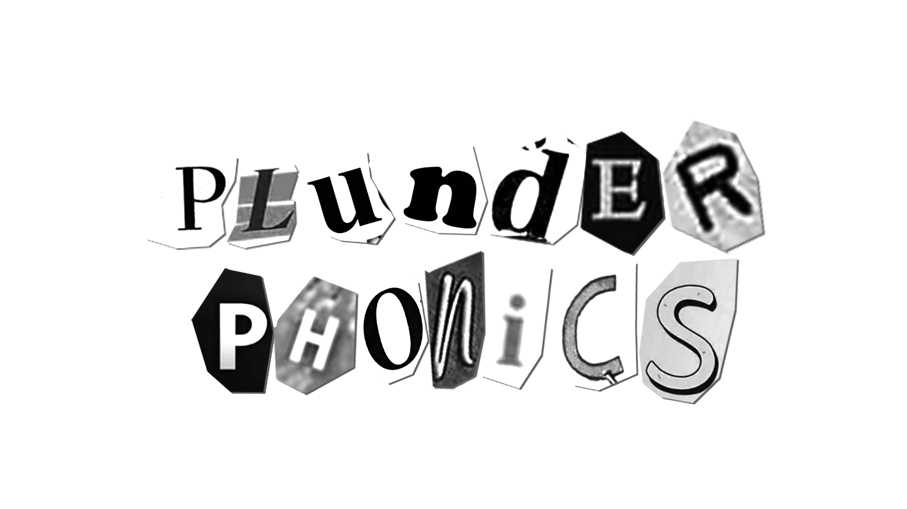

대표적인 Plunderphonics 앨범들

Since I Left You
(The Avalanches)
Donuts
(J Dilla)

Plunderphonics라는 명칭은 “훔치다, 약탈하다"를 뜻하는
Plunder 그리고 “소리"를 뜻하는 Phonics를 합하여 만들어졌고,
작곡가 John Oswald의 “Plunderphonics, or Audio Piracy
as a Compositional Prerogative” 에세이에서 처음 사용되었다.
샘플링은 힙합 등 다양한 장르에서 이용되고 있지만,
plunderphonics는 샘플링된 음원들이 곡 자체를
구성한다는 점에서 타 장르와의 차이를 보인다.
현 상태의 저작권법이 불러오는 폐해를
비판하기 위한 미디엄으로 사용되기도 한다.
Since I Left You
(The Avalanches)
Donuts
(J Dilla)